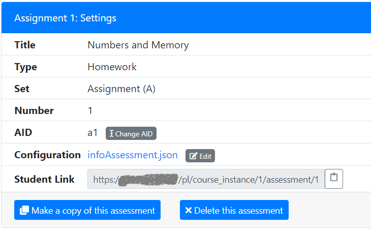

Jonatan Schroeder [INSERT NOTE ABOUT AUTHOR]. It is now easier to link to individual course instances and assessments on PrairieLearn. Instructors can now open the "Settings" menu for a course instance or assessment and find a URL that can be shared with students:

This link can be posted on external course web pages or learning management systems like Compass, Blackboard or Canvas. It can also be sent to students using email messages or discussion forums. By following the link, students are automatically enrolled in the course and can start working on the assessment immediately.
Want to help make PrairieLearn better? It's open source and contributions are welcome!